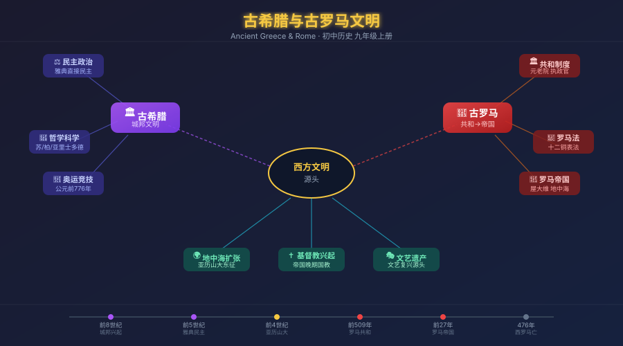

你每天打开手机投票选班委，用法律保护自己的权利，看奥运会比赛——这些都是日常生活中司空见惯的事。
但这些东西从哪里来？民主、法律、奥运——它们不是凭空出现的，而是在 2500 年前的地中海边诞生的。
因此，学习古希腊（民主政治的发源地）和古罗马（法律与共和制的奠基者），就是追溯现代世界政治文明的源头。
古希腊地处巴尔干半岛南部，多山地、多岛屿的地形使其发展出城邦（polis）文明——众多独立的小城市国家，而非统一帝国。雅典（Athens）和斯巴达（Sparta）是其中最具代表性的两个城邦，分别代表了两种截然不同的文明模式。
雅典民主政治
伯里克利时代（前 5 世纪）达到顶峰。全体成年男性公民均可参与公民大会，直接投票决定城邦事务。这是人类历史上最早的直接民主实践。
局限：妇女、外邦人、奴隶无权参与
斯巴达军事国家
崇尚武力，男孩 7 岁起接受严格军事训练。斯巴达公民是职业军人，农业生产由黑劳士（农奴）承担。
与雅典在伯罗奔尼撒战争中交战
哲学与科学
苏格拉底——问答法探索真理
柏拉图——《理想国》，哲学王
亚里士多德——百科全书式学者，"吾爱吾师，吾更爱真理"
奥林匹克运动
前 776 年，第一届奥林匹克运动会在奥林匹亚举行，每四年一届，期间各城邦停战。是古希腊宗教与竞技精神的体现。
⚡ 亚历山大大帝——希腊文明的传播者
马其顿国王亚历山大（前 356—前 323）在短短 13 年内建立了横跨欧、亚、非三洲的庞大帝国。他的东征将希腊文化传播到波斯、埃及、印度边境，史称希腊化时代。
罗马位于意大利半岛中部，台伯河畔。从一个小城邦起步，经历王政时代 → 共和国 → 帝国三个阶段，最终统治了整个地中海世界。罗马的最大贡献是法律体系和共和政治制度，深刻影响了后世西方国家的政治与法律。
🕐 罗马的三个时代
平民经过长期斗争，争取到保民官权力；
前 450 年颁布《十二铜表法》——罗马第一部成文法
全盛期（1—2世纪）版图横跨欧亚非；
3世纪后分裂衰落，476年西罗马帝国灭亡
《十二铜表法》
前 450 年，罗马第一部成文法。刻在 12 块铜牌上公布于广场，限制了贵族随意解释法律的权力，是平民争取权利的重要成果。
是罗马法的起源，也是西方法律传统的基石
共和制度
元老院：贵族组成，掌握财政外交
执政官：2人，年任，相互制约
保民官：保护平民利益，可否决元老院决议
屋大维建立帝国
凯撒遇刺后，屋大维经内战统一罗马，前 27 年获元老院赐称"奥古斯都（尊贵者）"，建立帝国。他保留共和制外壳，实为独裁统治。
基督教兴起
1 世纪初诞生于巴勒斯坦，在罗马帝国境内传播。313 年米兰敕令宣布合法，392 年成为罗马帝国国教，影响后世欧洲千年。
| 维度 | 🏛 古希腊（雅典） | 🦅 古罗马（共和国） |
|---|---|---|
| 政治形态 | 直接民主 公民亲自参与立法决策 |
共和制 元老院+执政官+保民官 |
| 核心成就 | 民主制度、哲学、科学、奥运会 | 罗马法、共和制度、建筑工程 |
| 文明特征 | 城邦独立，文化多元，重思辨 | 统一帝国，重实用，善治理 |
| 地理格局 | 巴尔干半岛+爱琴海岛屿 分散的城邦，未统一 |
从意大利扩张至地中海全域 统一的帝国 |
| 对后世影响 | 民主思想、哲学科学 → 文艺复兴重要源头 |
法律体系、共和制度 → 现代西方政治法律基础 |
| 局限性 | 民主仅限成年男性公民 排除女性、奴隶、外邦人 |
奴隶制广泛存在 晚期军事独裁腐化 |
罗马"做"——立法治国，帝国经营
古罗马 → 现代成文法、三权分立
看见它
民主、法律、奥运——这三个词在今天的新闻里每天都出现。古希腊罗马文明不是"过去的历史"，而是现代世界运行规则的底层代码。
拆开它
雅典民主 = 公民大会（立法）+ 陪审法庭（司法）+ 执政官（行政）。罗马共和 = 元老院 + 执政官 + 保民官。两者都已有"权力制衡"的雏形。
比较它
希腊"想"——民主哲思，城邦争鸣，重视公民的思想自由。罗马"做"——立法治国，帝国经营，重视实用性和组织力。两者互补，共同构成西方文明基础。
迁移它
美国宪法的三权分立、英国议会制度、法国《拿破仑法典》——都能追溯到古希腊罗马。思考：中国历史上有没有类似"公民大会"或"成文法"的制度？
🗺️ 互动地图——点击查看各时期真实历史版图
💡 观察地图思考：古希腊和古罗马都位于地中海沿岸，这一地理位置对它们的文明发展有什么共同影响？
罗马共和制→ 执政官、元老院、保民官的权力制衡，直接影响了美国三权分立（立法/行政/司法）制度设计；美国参议院英文"Senate"来自拉丁文 Senatus（元老院）。